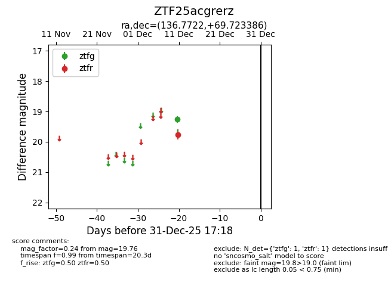
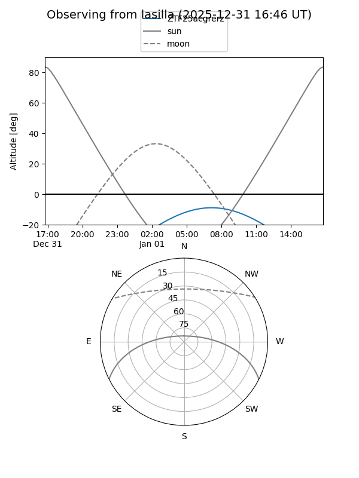
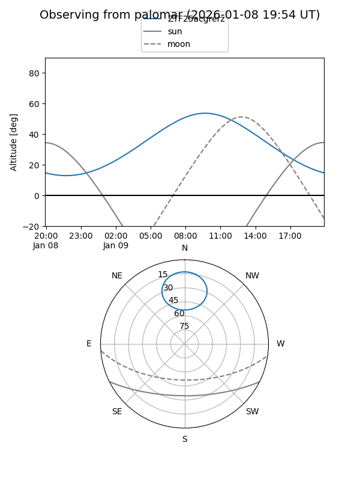

ZTF25acgrerz
Target ZTF25acgrerz at 2026-01-09 12:49
Aliases and brokers:
FINK: link
Lasair: link
ALeRCE: link
alt names
ZTF25acgrerz (ztf,fink_ztf)
Coordinates:
equatorial (ra, dec) = 136.7722,+69.72339
equatorial (HMS+DMS) = 09:07:05.33,+69:43:24.19
galactic (l, b) = (143.9975,+36.85613)
Flags:
Photometry:
last ztfg=19.26, ztfr=19.76
1 ztfg, 1 ztfr detections
Lightcurve

Visibility


Additional plots